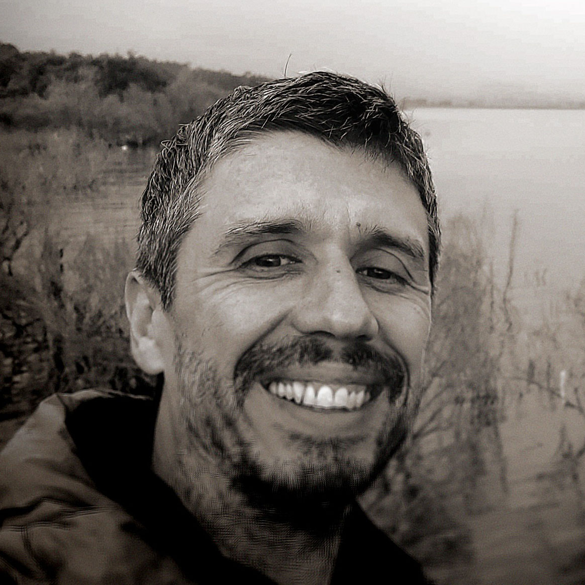

STATUS: ACTIVE
Dimitri Davidoff
IT professional with 20+ years of experience in hardware-software integration, ERP systems (SAP, Priority), and technical support. Recently graduated from QA Automation College, shifting focus to modern testing and frontend development. Expert in utilizing advanced AI models (LLMs) and AI orchestration to accelerate development cycles, solve complex tasks, and architect digital products.
Featured Case Study
RADIUS ARCHIVE
- Architecture & Design: Designed the UI/UX for an interactive web platform (retro TV and reel-to-reel players) using pure HTML/CSS/JS.
- AI Orchestration: Orchestrated multiple AI models (LLMs, Suno for music, image generators) to create content, write frontend logic, and construct scalable JSON data structures.
- QA & Automation: Authored E2E test strategies using Playwright. Set up CI/CD pipelines via GitHub Actions for automated regression testing.
- Impact & Metrics: Achieved 100K+ organic plays on YouTube Music and grew an audience of 400+ subscribers within 5 months.
Professional Experience
IT Integration & Service Team Lead
Leading technical support and hardware/software integration with ERP systems (SAP, Priority). Managing driver configurations and troubleshooting complex edge cases.
Technical Support Specialist
Provided Tier 2 technical support for hardware and software, including BarTender and label printing solutions.
Technical Support
Maintained internal computer systems, provided user support, and managed hardware drivers and network configurations.
QA Automation Education
Studied Java, Selenium, TestNG, POM, SQL, and Agile methodologies. Practical experience in STP/STD/STR documentation and bug reporting.
Technical Arsenal
Languages
Initiate Contact
Available for new opportunities in QA Automation, Frontend Development, and AI Product Management.